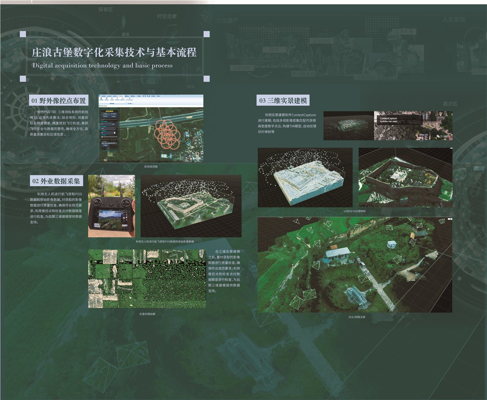
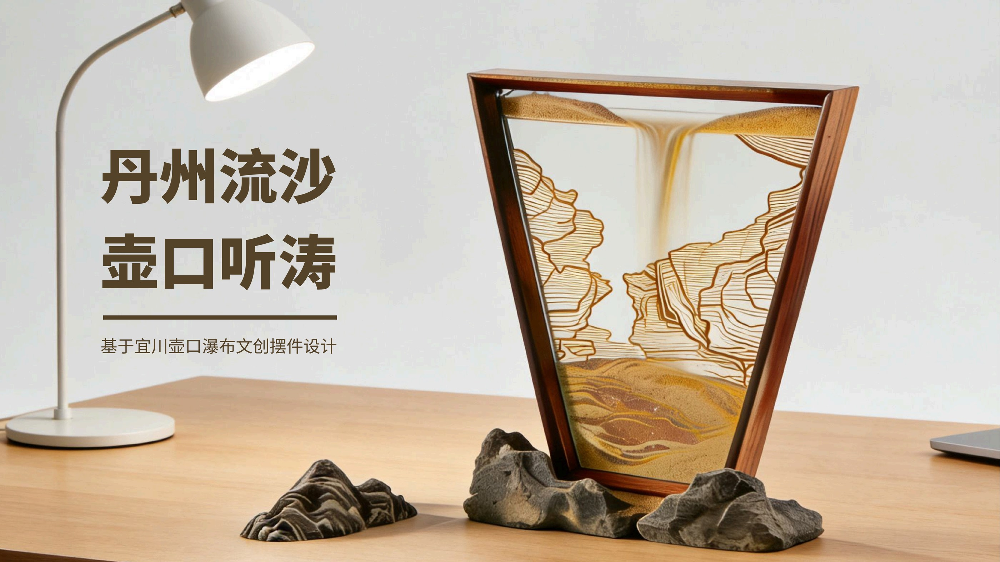
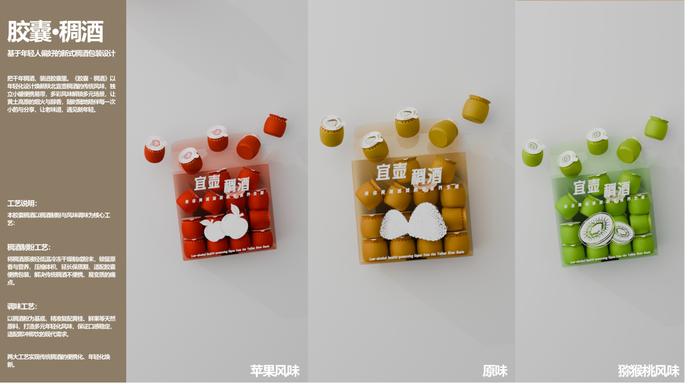

科大讯飞 结构设计助理
参与智能硬件方案协作、样件验证与产品研究，连接结构设计、使用体验和展示表达。
 01
01
我关注地方文化如何转化为当代体验，也关注产品如何回应真实使用场景。具备从文化与用户调研、问题定义，到视觉表达、产品方案和原型验证的跨环节实践。
参与智能硬件方案协作、样件验证与产品研究，连接结构设计、使用体验和展示表达。
协助需求梳理与小程序体验优化，参与品牌内容设计和新媒体工作流建设。
02
夯土城墙从梁峁上环抱而下，城门、墙体与村庄相连。庄浪古堡不是孤立的遗址，它们仍在黄土沟壑与日常生活之间。


 概念渲染 / 夯土肌理向点云转化
概念渲染 / 夯土肌理向点云转化
土堡长期暴露在自然环境中，水、温度与风会使夯土发生剥蚀、裂隙、冲沟等变化。许多古堡还与村落紧邻，时间、使用与环境共同改变着它们的形态。
数字化记录把形体、肌理与场地关系保存为可回看、可比较的资料，为后续研究、保护和公众理解留下参照。
此处以现场影像与夯土遗址风化研究说明保存风险，不代表对某一座古堡作了病害鉴定。
《夯土遗址风化病害类型、机理与保护加固：现状和展望》
先理解遗址的空间与环境，再选择采集方式。无人机影像、地面扫描与现场校核共同建立可用于建模的原始数据。
结合地形和扫描范围规划飞行路线，布置控制点与检查点。
无人机获取 POS 与原始影像；按遗址情况进行地面补拍、三维扫描。
检查影像质量、重叠度与控制点，生成点云并进行三维实景建模。
把模型、影像与历史信息组织成信息可视化与展览内容。

展墙记录了项目采用的采集设备与基本流程。从三维采集得到的空间数据出发，项目进一步把古堡的历史、形制与地域信息转译为动态视觉内容。信息可视化视频让原本分散的资料在时间中建立联系。
 旗峰堡 / 项目粒子效果图
旗峰堡 / 项目粒子效果图点云把墙体的起伏、缺口和空间轮廓转为可视的数据。旗峰堡与通边堡的粒子图像，将技术记录转成可被观看的视觉语言。


从真实采集，到数据整理，再到展览视觉，每一步都在回答同一个问题：怎样让正在变化的遗址，仍能被准确地看见。
水洛城的城史与每一座古堡的建造年代并不相同。结合展墙沿革与县志资料，我们把庄浪古堡放回更长的地方历史中理解。
庄浪县政府所载早期史料提及水洛城，是现存地名见于史册的重要节点。
庆历三年，刘沪收复水洛城；城址连接秦、渭地区，具有重要军事与交通意义。
宋金时期，水洛、通边及多处据险而建的城堡共同构成区域防御脉络。
展墙记述元至正二十七年重建庄浪城，城池与堡寨在不同历史阶段持续演变。
堡寨扩展并融入村落生活。展墙将其功能变化概括为居住与庇护。
第三单元以“民间记忆”和“精神传承”为线索，将地方器物与集体记忆带回观众眼前。
411年据庄浪县人民政府《历史沿革》；1043年据县志资料及展墙；1142、1367与“居住/庇护”节点据第二单元展墙文字整理。墙上年代针对城址与区域沿革，不能直接等同于所有古堡的始建年代。
庄浪县人民政府：历史沿革 《庄浪县志（1991—2010）》相关条目
展览把“古堡是什么、经历过什么、如何进入当代生活、怎样面向未来”组织成连续的观看路径。
展览单元名称、内容结构与开展时间据南开大学公开报道；墙面图像为项目原始设计资料。
南开大学文学院：庄浪县古城堡数字保护调查影像展启幕
 博物馆展览现场 / 夯土墙装置与第四单元展墙
博物馆展览现场 / 夯土墙装置与第四单元展墙


从整体空间到单个展项，记录展墙、实物与数字影像共同构成的观看环境。


活动照片记录观众在展墙、实物与数字展项之间的停留、观看和体验。


 庄浪县博物馆展览现场 / 项目资料中的现场照片
庄浪县博物馆展览现场 / 项目资料中的现场照片
展览于 2025 年 8 月 19 日在庄浪县博物馆启幕。南开大学与庄浪县官方报道记录了展览内容、合作单位与公众参与，让数字化保护成果从项目现场走向公共传播。
报道介绍展览以“庄浪古城堡、历史印记、当代回响、未来已来”四个单元，呈现古堡数字扫描、VR全景与数字文创等实践。
阅读南开大学原报道 ↗“100余人”指开展仪式参与人数，并非累计观展人数；相关信息据庄浪县人民政府公开报道。
核对庄浪县区位、六盘山西麓、黄土高原丘陵沟壑区等地理信息。
打开政府页面核对夯土建造、古堡构成、官堡与民堡类型，以及320余座/现存200余座的粗略统计。
打开报道核对水洛城早期见于史册的时间节点，并与展墙沿革进行区分。
打开政府页面参考刘沪收复水洛城及庄浪地方史相关记载。
打开县志 PDF核对展览举办日期、地点、合作单位与四个展览单元的公开信息。
打开南开大学报道核对开展仪式参与人数与推动展览进校园、进单位的传播倡议。
打开庄浪县报道用作夯土在水、温度和风等自然因素下可能发生风化的通用背景，不替代遗址病害调查。
打开论文 PDF把一座古堡记录下来，
也把它所在的时间与生活留了下来。

19从地方文化调研，到资源数据库，再到可使用、可参与的设计方案。
项目围绕宜川县文旅融合展开，以红色文化与地域文化为基础，研究文化创意产品及衍生品的设计方向。
研究覆盖红色文化、文创产品设计与地域文化活化，为后续调研和设计建立参考框架。
宜川红色遗址、胸鼓与斗鼓、壶口瀑布、地方物产、非遗手工艺及生活场景。
调研指出，已有文创常见文化符号简单粘贴、产品同质化、本土辨识度不足等情况。
如何把文化线索变成有地方识别度、适合日常使用或参与的产品与体验？
文献与实地调研 → 文化元素提取 → 数据库与筛选 → 设计转译 → 产品方案展示。
项目梳理与红色文化、文创设计及地域文化活化有关的 300 篇文献，并归纳出四个与宜川设计相关的观察方向。
红色文创不止复刻视觉符号，也要呈现人物、事件与精神内核。
非遗、民俗、历史与自然资源共同构成宜川文化的辨识度。
AIGC 等工具可辅助探索，但文化准确性与设计判断仍需核验。
产品需要兼顾文化叙事、实际使用和不同场景中的传播。
现有产品容易停留在表面贴图，红色主题与宜川地域特色的表达不足。设计因此从“可识别”继续推进到“可使用、可记忆、可参与”。
实地调研覆盖红色遗址、文化场所、特色市场与地方手工艺，观察文化如何在真实环境中被观看、使用和传承。

秋林抗战纪念地、瓦子街战役烈士陵园等，记录建筑、纪念设施与历史叙事。

走访博物馆展陈，梳理地方历史、实物资料与可继续转译的文化信息。

记录服饰、鼓具、动作和队形，理解动态非遗的节奏与视觉特征。

走访剪纸工作室、葫芦烙画等场景，观察工艺过程、材料和图案语言。
访谈与现场观察帮助团队补足文献难以呈现的使用场景、传播问题和地方经验。


数据库部分将分散的遗址、非遗、自然风物与生活场景归类，再通过筛选规则把资源连接到设计决策。
项目将调研所得从“看过、记下”推进到“可比较、可选择、可转译”，为后续设计建立共用的内容底稿。
分类既保留资源来源，也为后续选择设计媒介提供线索。
把“元素是什么、来自哪里、有什么特征、适合怎样转译”放在同一条记录中，形成清晰的设计检索路径。
这是根据项目内容整理的数据库展示结构，用于呈现资源如何进入设计判断。
| 文化元素 | 关键信息 | 设计转译方向 |
|---|---|---|
| 宜川胸鼓 | 表演动作、鼓具、红绸与服饰 | 扇面人物、动作节奏、角色周边 |
| 壶口瀑布 | 黄河水势、峡谷层理、沙流 | 流沙摆件、器物曲线、地貌香氛石 |
| 秋林抗战纪念地 | 工字形建筑、红旗、牡丹与云纹 | 遗址图形、纪念品与日常载体 |
| 宜川物产 | 苹果等地方风物与果香意象 | 便携香片、礼赠及产品识别 |
设计团队评分、地方专家意见与问卷结果共同参与筛选，避免只凭视觉偏好决定资源优先级。
从资料归档到方案选择，形成一套可解释的评估顺序。
筛选权重据项目原始汇报 PPT 整理。
问卷结果帮助团队判断产品形态的优先级，让设计从“文化能否表达”继续考虑“用户愿不愿意带走、使用或参与”。
宜川文化资源的当代设计转译
苹果风味 / 原味 / 猕猴桃风味



以宜川特产为灵感的
香片挂件设计


红色文化主题衍生设计